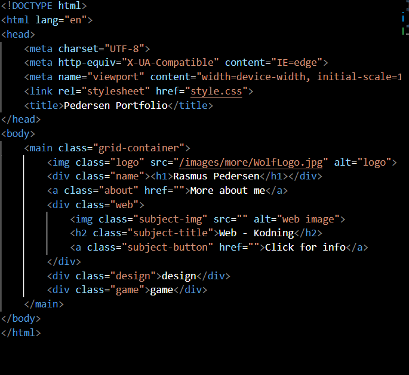

Rasmus Pedersen

Web - Coding
I have coded a fair amount of website, so I would say that I am pretty good at It.
I have made a lot of different sites, where I used css and javascript in different ways.
Most of the time I code websites, I prefer coding them for computers, instead of mobiles, since you can implement a greater amount of detail.
I have worked with web coding on and off, for more than three years, plus I have given helpful tips and helped others make their own sites.